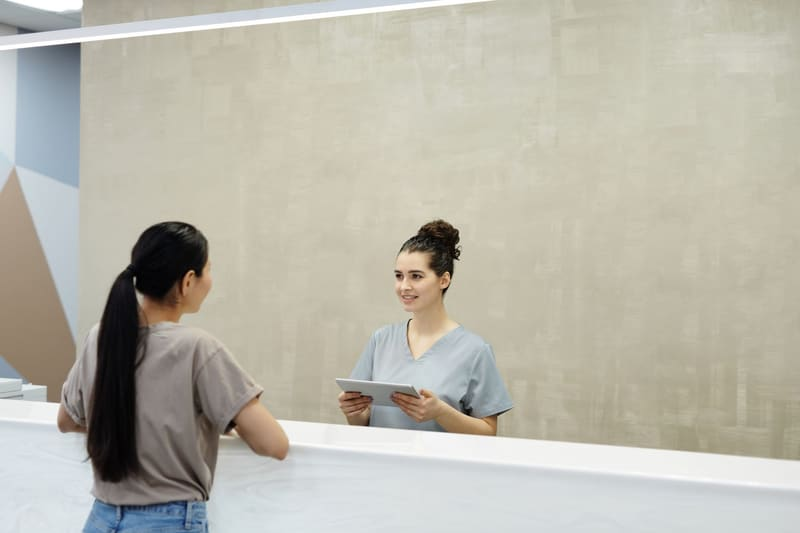
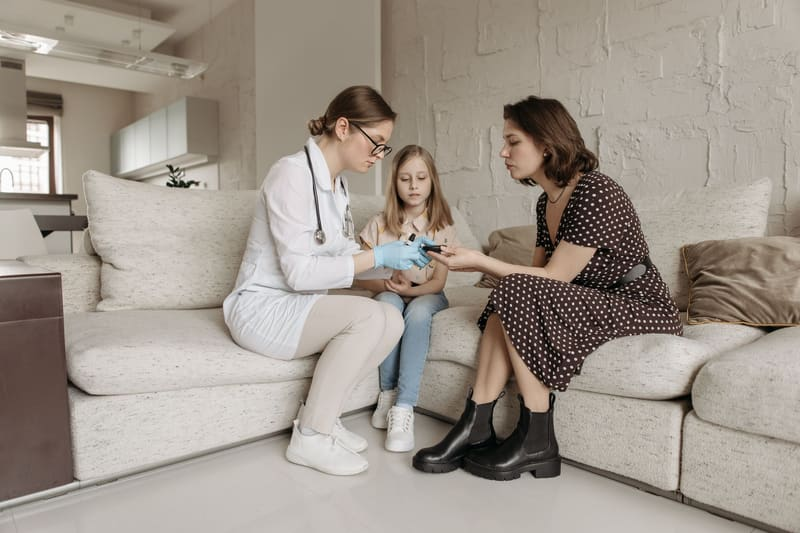
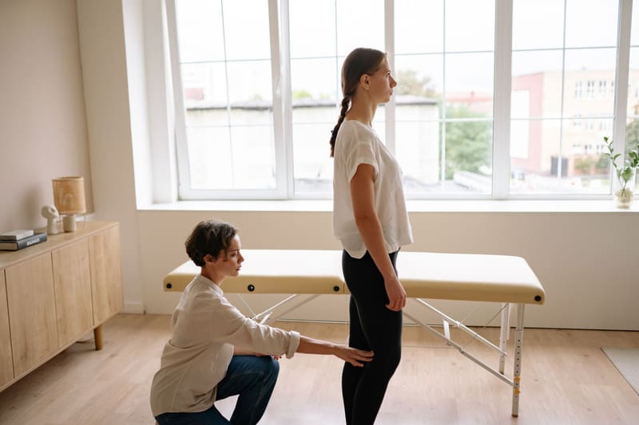
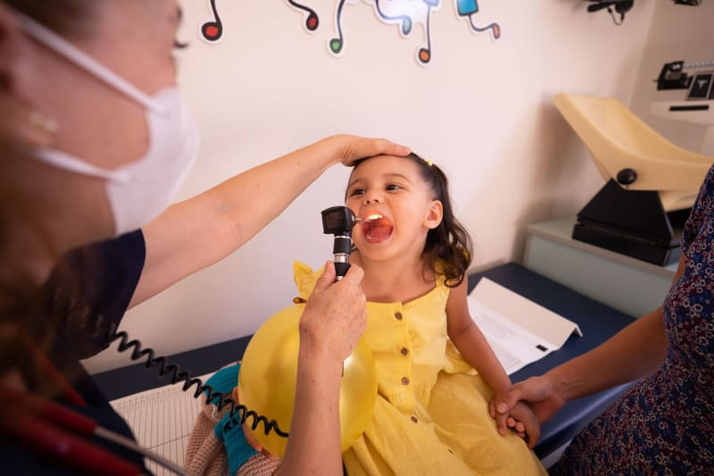
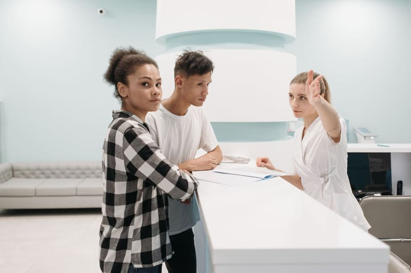

Perfil de exemplo
Dra. Ana
Clínica geral
Acompanha adultos e faz o primeiro cuidado da família, com consulta conversada e encaminhamento quando precisa.
Clínica geral, pediatria, fisioterapia e exames. Agende pelo WhatsApp e confirme em minutos.
Lista de exemplo. Em um site real, a recepção confirma os convênios aceitos.

A Clínica Exemplo atende famílias no mesmo endereço, com consulta no mesmo dia sempre que a agenda permite, e com tempo para ouvir.
Cuidamos de clínica geral, pediatria, fisioterapia e exames de rotina. A recepção organiza o encaixe e explica o que levar.
No WhatsApp, confirmamos horário, especialidade e documentos. Sem formulário longo e sem espera na linha telefônica.
Quatro portas de entrada, no mesmo prédio. Escolha a que faz sentido e agende pelo WhatsApp.
Acompanhamento de rotina, queixas do dia a dia e o primeiro cuidado da família, com tempo para explicar o que vem depois.

Cuidado de crianças e adolescentes, com calma para ouvir quem chega e explicar cada passo para quem cuida delas.

Sessões para retomar o movimento no cotidiano, com avaliação inicial e horários combinados na recepção.

Exames de rotina combinados com a consulta, para resolver o que for possível no mesmo endereço e no mesmo dia, quando a agenda permitir.
Três perfis de exemplo, para mostrar como a equipe aparece em um site real.
Perfil de exemplo
Clínica geral
Acompanha adultos e faz o primeiro cuidado da família, com consulta conversada e encaminhamento quando precisa.
Perfil de exemplo
Pediatria
Recebe crianças e tira as dúvidas de quem chega com elas, no mesmo endereço da clínica.
Perfil de exemplo
Fisioterapia
Ajuda a retomar o movimento no dia a dia, com sessões combinadas na recepção.
Num site real, aqui aparecem nome, CRM e RQE de cada médico, como pede o CFM.
Domingos e dias passados ficam indisponíveis. O calendário mostra os próximos 30 dias. A mensagem é só uma demonstração.
Depoimentos de exemplo, criados para esta demonstração.
5 de 5 estrelas.
A recepção respondeu rápido no WhatsApp e me explicou o que levar. Fui atendida no horário marcado.
5 de 5 estrelas.
O médico explicou cada passo com calma, sem pressa. Saí entendendo o que tinha sido combinado.
5 de 5 estrelas.
Cheguei com a criança e o atendimento foi pontual. A equipe foi atenciosa do começo ao fim.
Rua Exemplo, 100 – Rio Vermelho, Salvador – BA (endereço de exemplo)
| Segunda a sexta | 7h–19h |
|---|---|
| Sábado | 7h–19h |
| Domingo | Fechado |

Envie uma mensagem no WhatsApp com a especialidade e um período. A recepção confirma o horário em minutos, dentro do expediente.
Sim, particular e convênios. A lista neste site é de exemplo; no atendimento, a recepção confirma a cobertura da sua carteirinha.
Chegue uns dez minutos antes, com documento e, se for convênio, a carteirinha.
Sim. A pediatria recebe crianças e adolescentes; a clínica geral atende o restante da família no mesmo endereço.
Exames de rotina podem ser combinados no WhatsApp, conforme a agenda do dia.
De segunda a sábado, das 7h às 19h. Aos domingos a clínica não abre.
Estamos no Rio Vermelho, em Salvador — o endereço desta página é de exemplo. No WhatsApp, a recepção envia a referência de quem vem de ônibus, de carro ou de aplicativo.
Não. Este é um site de demonstração de uma clínica fictícia, criado pela DulunduZ Tec. Nenhuma consulta é marcada de verdade por aqui; o WhatsApp abre uma conversa com a DulunduZ Tec.
A recepção responde no WhatsApp em horário de funcionamento e confirma o encaixe.